#1 · 8103 瀚荃2026-08-19 10:40
82.40
收盤 82.40 MA20 81.76 L1 80.50 / L2 81.00 / 頸線 84.00 停損 80.50 量度 87.50 彈回 2.36% 站上 0.78% 深度 4.35% 跌幅 6.09%
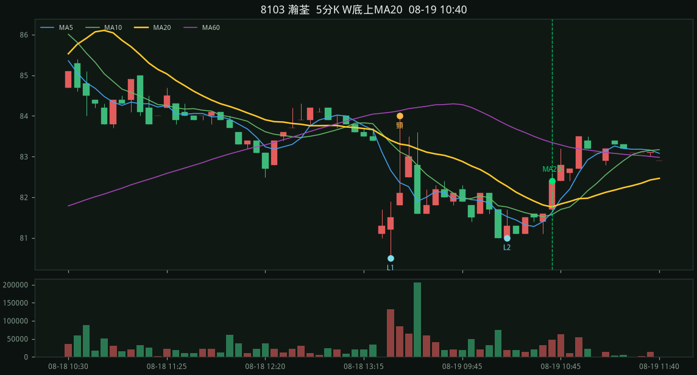
2026-08-19～2026-08-25 · 10d · 股價<700 · 嚴格 · 掃描 100 檔
規則：五分 K 做出 W 底（先大跌、兩個相近低點），收盤由下往上穿過五分 MA20 才通知。
嚴格：同一天做出 W、09:15 後、先跌 ≥5.5%、頸線深度 ≥1.2%、兩低點價差 ≤1.5%、從低點彈回 1.1%～2.5%、收盤站上 MA20 ≥0.45%。對齊國巨 515/515→521、南亞科 480/481→487。
08-19 8103 瀚荃、2634 漢翔、3605 宏致、8039 台虹、2481 強茂、6538 倉和
08-20 3450 聯鈞、2637 慧洋-KY、3702 大聯大、2486 一詮、2327 國巨、6182 合晶
08-21 6182 合晶、3362 先進光、6147 頎邦
08-24 1301 台塑、3441 聯一光
08-25 6830 汎銓、2426 鼎元、3450 聯鈞、4991 環宇-KY、6451 訊芯-KY、2327 國巨、2408 南亞科、2351 順德、5608 四維航
收盤 82.40 MA20 81.76 L1 80.50 / L2 81.00 / 頸線 84.00 停損 80.50 量度 87.50 彈回 2.36% 站上 0.78% 深度 4.35% 跌幅 6.09%

收盤 70.60 MA20 69.66 L1 69.30 / L2 69.30 / 頸線 70.80 停損 69.30 量度 72.30 彈回 1.88% 站上 1.34% 深度 2.16% 跌幅 6.78%
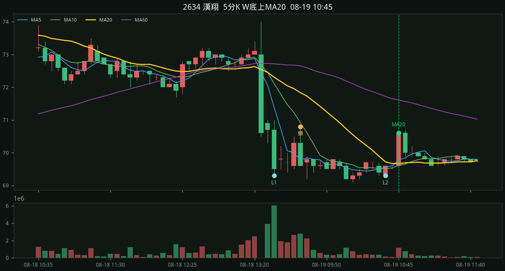
收盤 119.50 MA20 118.60 L1 117.00 / L2 117.50 / 頸線 122.50 停損 117.00 量度 128.00 彈回 2.14% 站上 0.76% 深度 4.70% 跌幅 7.69%
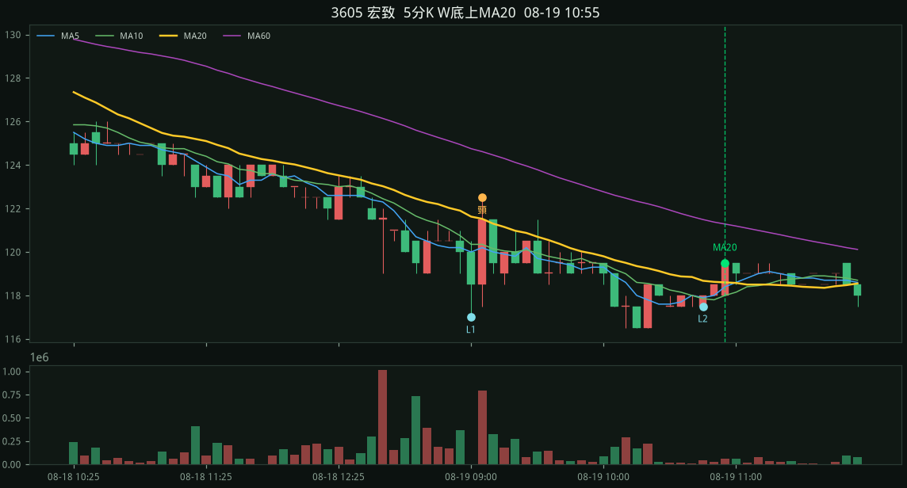
收盤 273.50 MA20 272.07 L1 270.00 / L2 268.00 / 頸線 276.00 停損 268.00 量度 284.00 彈回 2.05% 站上 0.52% 深度 2.99% 跌幅 6.16%
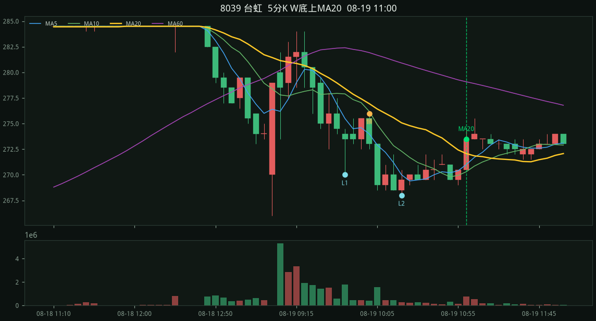
收盤 139.00 MA20 137.95 L1 136.00 / L2 136.00 / 頸線 138.00 停損 136.00 量度 140.00 彈回 2.21% 站上 0.76% 深度 1.47% 跌幅 8.82%
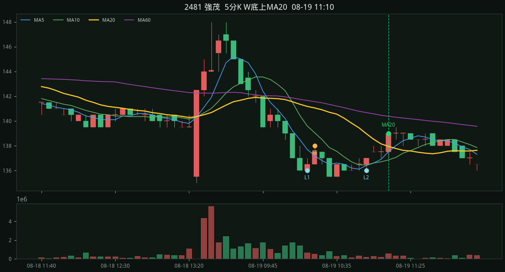
收盤 188.50 MA20 186.60 L1 185.00 / L2 185.00 / 頸線 188.00 停損 185.00 量度 191.00 彈回 1.89% 站上 1.02% 深度 1.62% 跌幅 7.30%
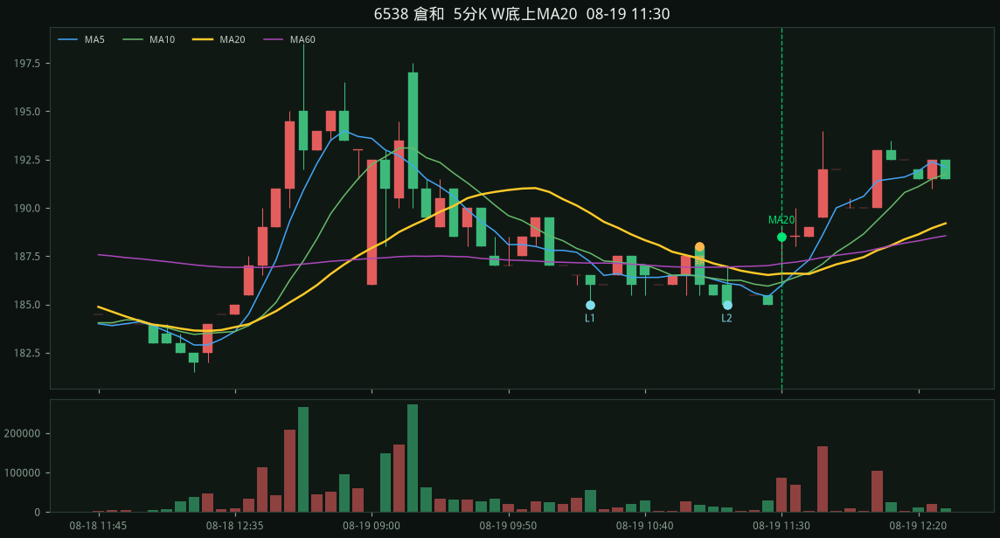
收盤 565.00 MA20 560.65 L1 554.00 / L2 552.00 / 頸線 571.00 停損 552.00 量度 590.00 彈回 2.36% 站上 0.78% 深度 3.44% 跌幅 6.16%
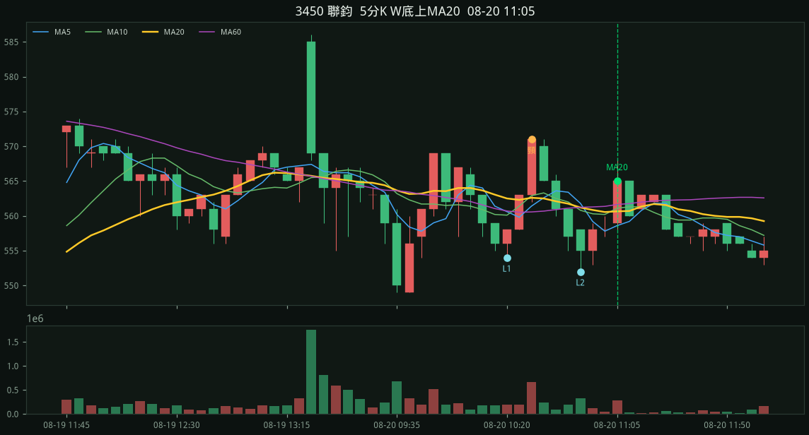
收盤 92.50 MA20 91.95 L1 90.80 / L2 90.80 / 頸線 93.30 停損 90.80 量度 95.80 彈回 1.87% 站上 0.59% 深度 2.75% 跌幅 5.73%
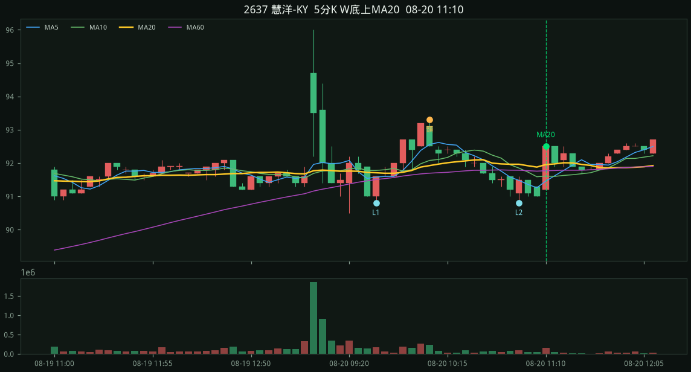
收盤 104.50 MA20 103.92 L1 104.00 / L2 103.00 / 頸線 105.00 停損 103.00 量度 107.00 彈回 1.46% 站上 0.55% 深度 1.94% 跌幅 6.31%
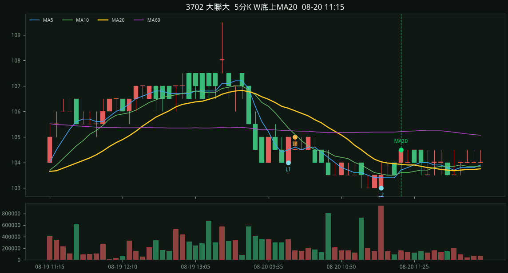
收盤 231.50 MA20 230.43 L1 229.00 / L2 227.00 / 頸線 235.50 停損 227.00 量度 244.00 彈回 1.98% 站上 0.47% 深度 3.74% 跌幅 7.27%
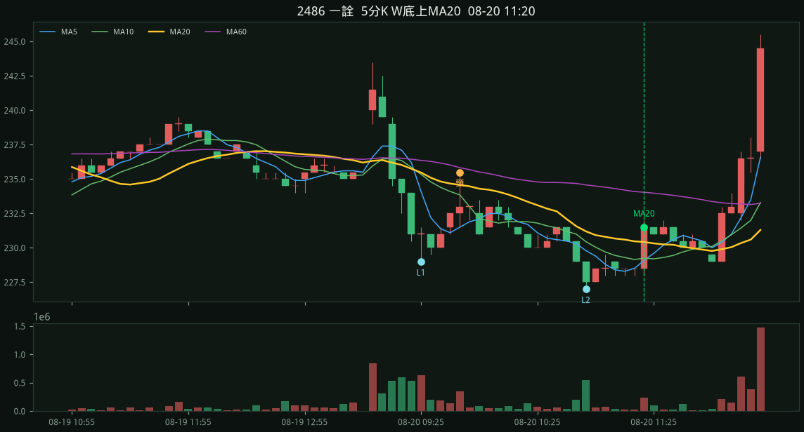
收盤 557.00 MA20 554.10 L1 550.00 / L2 550.00 / 頸線 557.00 停損 550.00 量度 564.00 彈回 1.27% 站上 0.52% 深度 1.27% 跌幅 6.00%
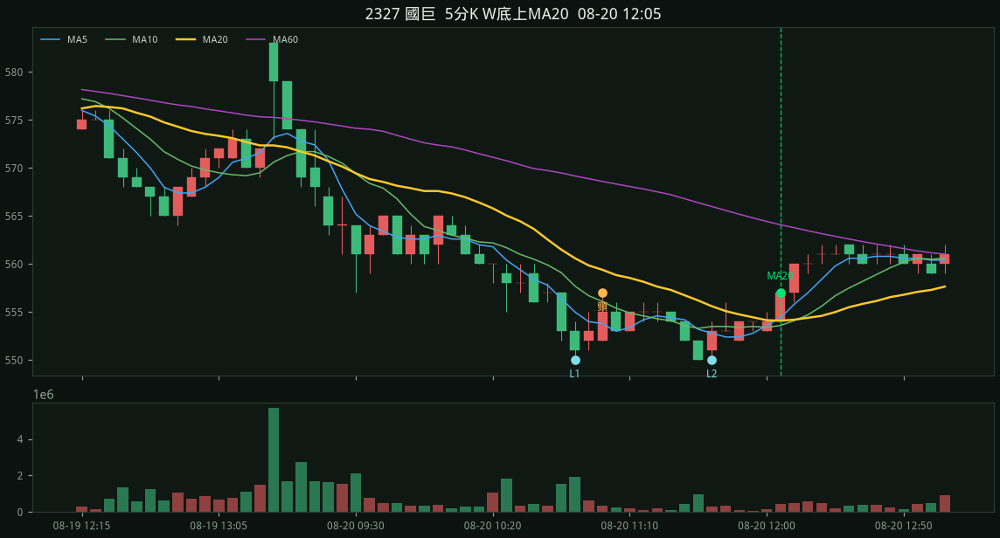
收盤 109.00 MA20 108.12 L1 108.00 / L2 107.50 / 頸線 110.50 停損 107.50 量度 113.50 彈回 1.40% 站上 0.81% 深度 2.79% 跌幅 6.51%
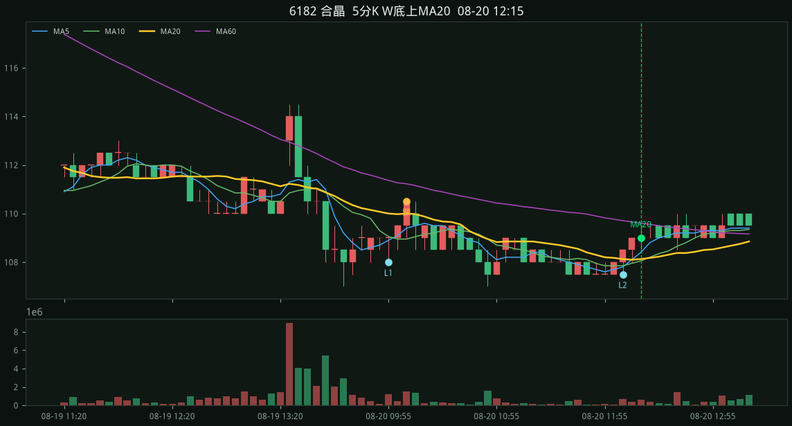
收盤 104.50 MA20 103.92 L1 103.00 / L2 103.00 / 頸線 104.50 停損 103.00 量度 106.00 彈回 1.46% 站上 0.55% 深度 1.46% 跌幅 6.31%
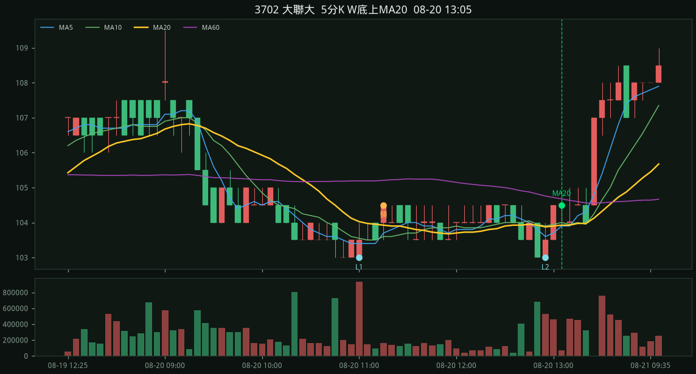
收盤 105.00 MA20 104.47 L1 104.00 / L2 103.50 / 頸線 105.50 停損 103.50 量度 107.50 彈回 1.45% 站上 0.50% 深度 1.93% 跌幅 6.76%
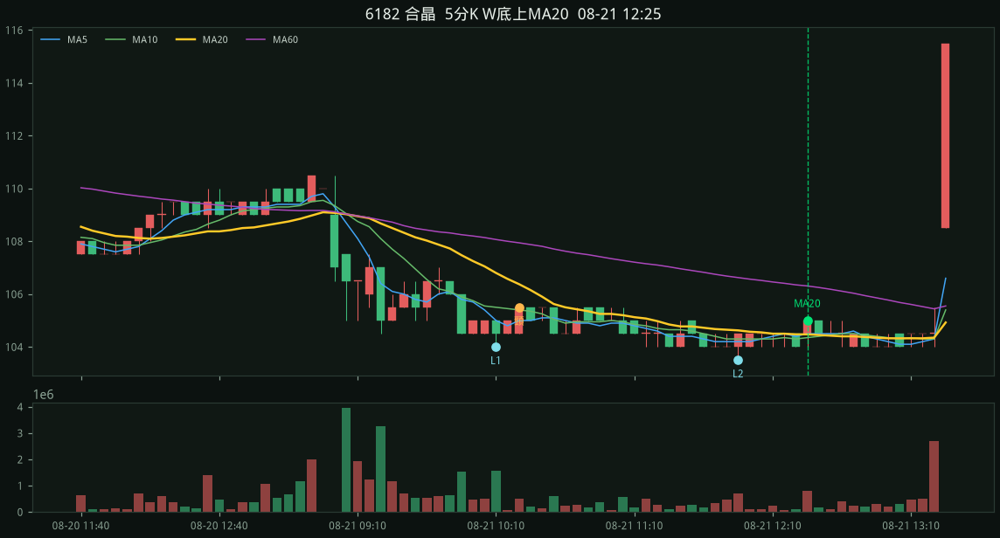
收盤 183.00 MA20 182.00 L1 181.00 / L2 180.50 / 頸線 186.00 停損 180.50 量度 191.50 彈回 1.39% 站上 0.55% 深度 3.05% 跌幅 5.82%
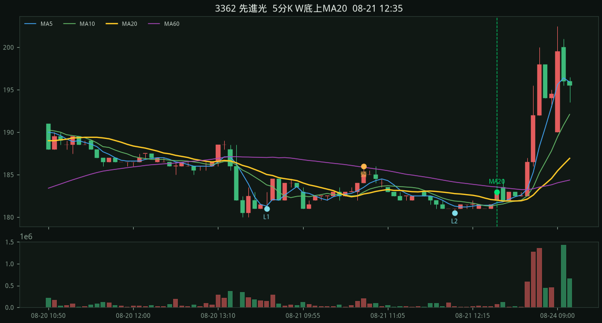
收盤 157.50 MA20 156.25 L1 156.00 / L2 155.00 / 頸線 158.50 停損 155.00 量度 162.00 彈回 1.61% 站上 0.80% 深度 2.26% 跌幅 6.45%
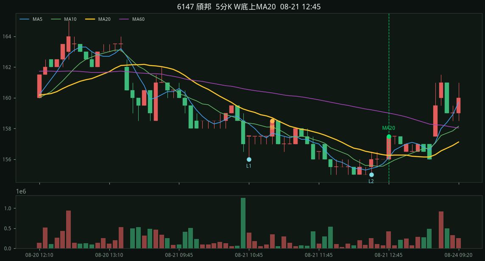
收盤 56.90 MA20 56.61 L1 56.20 / L2 56.00 / 頸線 57.00 停損 56.00 量度 58.00 彈回 1.61% 站上 0.52% 深度 1.79% 跌幅 6.25%
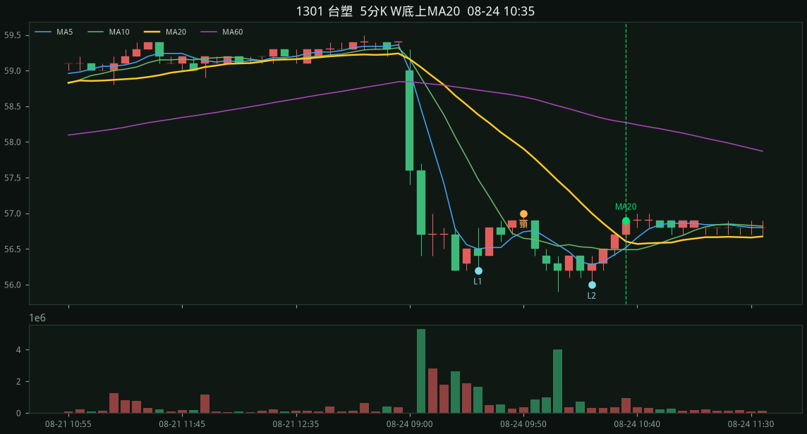
收盤 111.50 MA20 110.97 L1 109.50 / L2 109.00 / 頸線 112.50 停損 109.00 量度 116.00 彈回 2.29% 站上 0.47% 深度 3.21% 跌幅 7.34%
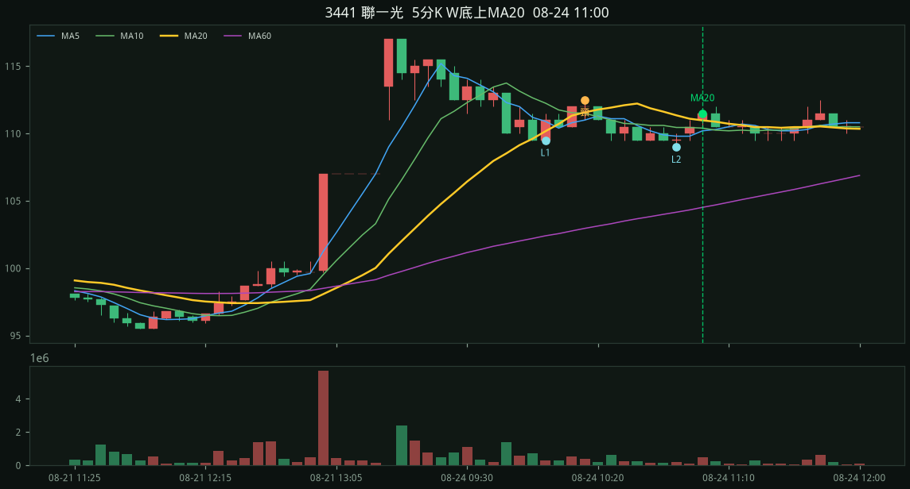
收盤 111.50 MA20 110.53 L1 109.50 / L2 109.50 / 頸線 112.50 停損 109.50 量度 115.50 彈回 1.83% 站上 0.88% 深度 2.74% 跌幅 6.85%
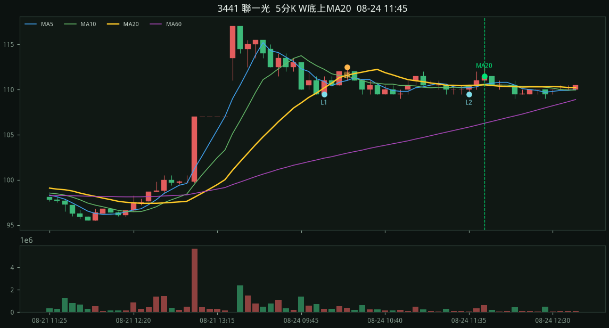
收盤 452.00 MA20 449.95 L1 446.50 / L2 447.00 / 頸線 454.50 停損 446.50 量度 462.50 彈回 1.23% 站上 0.46% 深度 1.79% 跌幅 6.61%
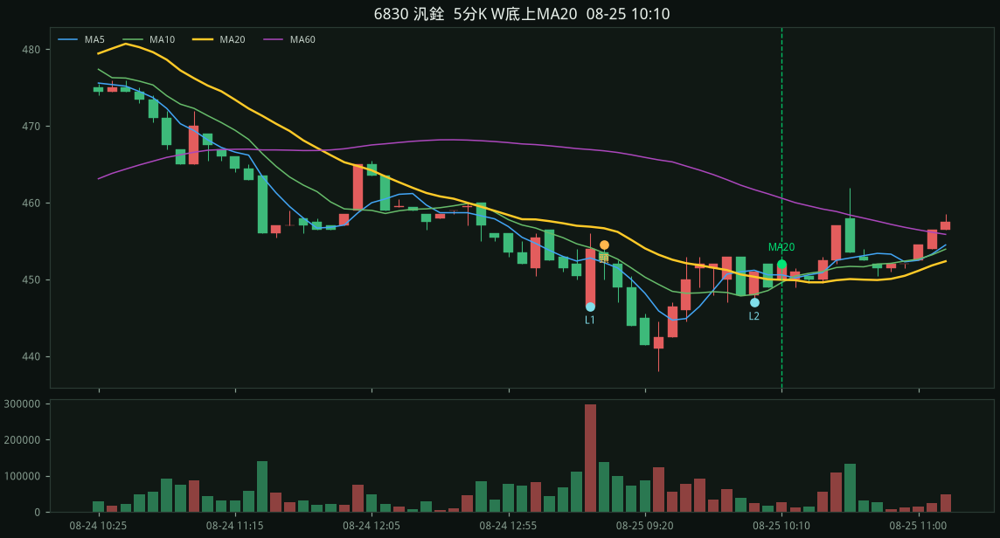
收盤 83.40 MA20 82.99 L1 82.00 / L2 81.40 / 頸線 84.50 停損 81.40 量度 87.60 彈回 2.46% 站上 0.49% 深度 3.81% 跌幅 7.00%

收盤 495.50 MA20 492.43 L1 485.50 / L2 486.50 / 頸線 500.00 停損 485.50 量度 514.50 彈回 2.06% 站上 0.62% 深度 2.99% 跌幅 9.99%
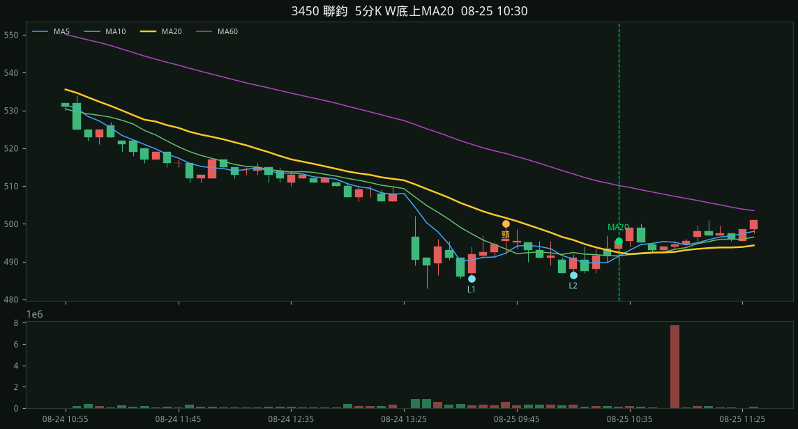
收盤 430.00 MA20 427.25 L1 420.00 / L2 420.00 / 頸線 435.00 停損 420.00 量度 450.00 彈回 2.38% 站上 0.64% 深度 3.57% 跌幅 9.52%

收盤 394.00 MA20 391.77 L1 388.50 / L2 390.00 / 頸線 395.00 停損 388.50 量度 401.50 彈回 1.42% 站上 0.57% 深度 1.67% 跌幅 5.66%

收盤 521.00 MA20 518.55 L1 515.00 / L2 515.00 / 頸線 523.00 停損 515.00 量度 531.00 彈回 1.17% 站上 0.47% 深度 1.55% 跌幅 9.51%

收盤 487.00 MA20 484.43 L1 480.00 / L2 481.00 / 頸線 491.00 停損 480.00 量度 502.00 彈回 1.46% 站上 0.53% 深度 2.29% 跌幅 7.92%

收盤 429.00 MA20 425.70 L1 423.00 / L2 424.50 / 頸線 430.00 停損 423.00 量度 437.00 彈回 1.42% 站上 0.78% 深度 1.65% 跌幅 7.68%
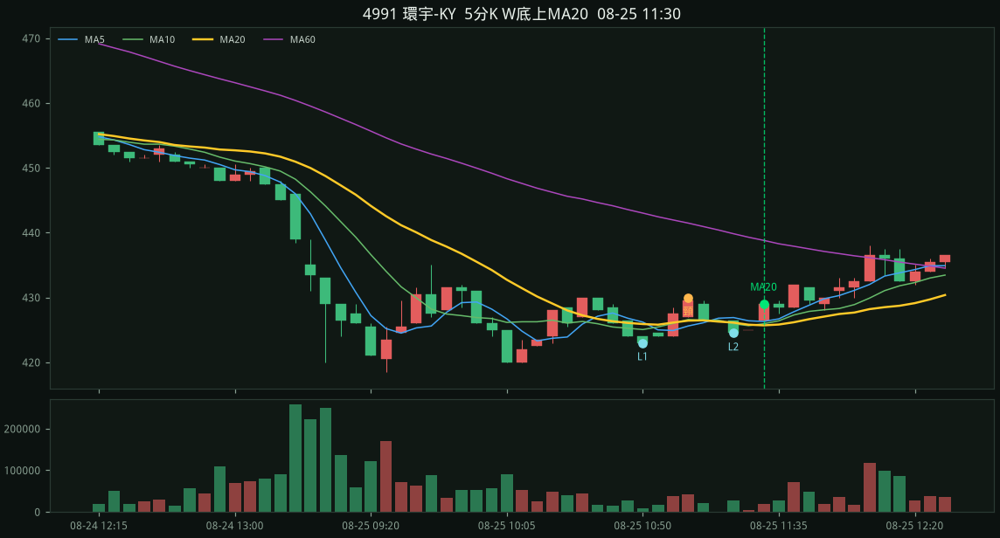
收盤 189.50 MA20 188.50 L1 188.00 / L2 187.00 / 頸線 191.00 停損 187.00 量度 195.00 彈回 1.34% 站上 0.53% 深度 2.14% 跌幅 7.49%

收盤 18.50 MA20 18.37 L1 18.30 / L2 18.20 / 頸線 18.60 停損 18.20 量度 19.00 彈回 1.65% 站上 0.72% 深度 2.20% 跌幅 6.87%
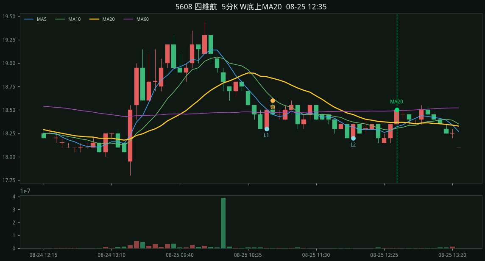